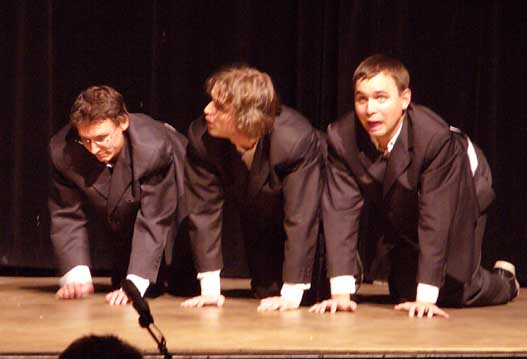
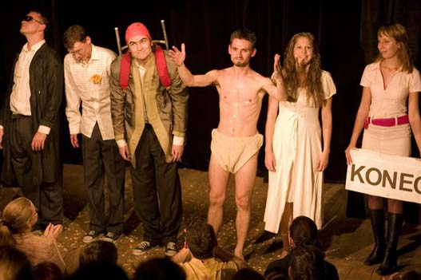
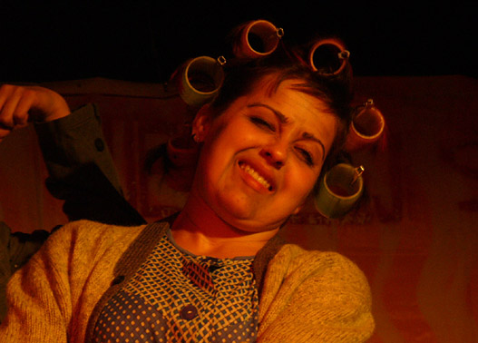
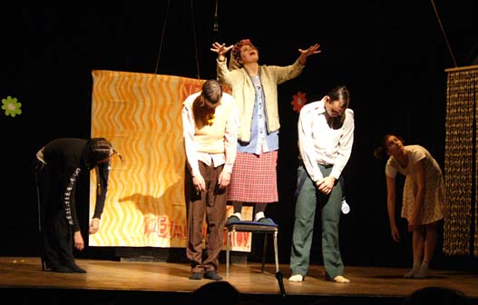
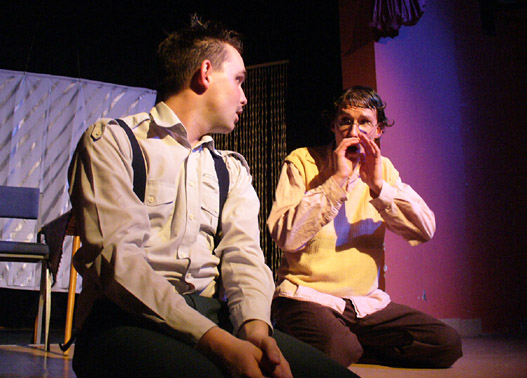
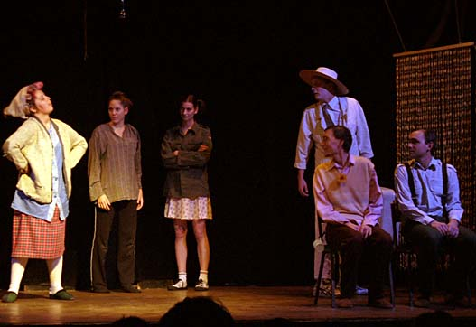

Ivan, Kamil a Dušan (od 2008) - ve spolupráci s Antonínem DS
Továrna (2007)
Do prkýnka! To byly dožínky / Produkt (2006/7)
Uďoblinky (2005/7)
Návrat z proutí (2005/6)
Návštěvní den 19h (2005)
Monopoly (2004/5)
Ptáčci (2004)
písní & písní / Ukrást sůvě oko z hlavy (2004/6)
Slavná balkónová scéna a jiné utopie (2003)
Tají dech / Jatý dech / Kompotovaný večer (2003)
Obratník (2002)
New York New York (2001)
Liho Tour (2000)
Pošetky & spol. (1998/9)
podrobnější rozpis všech vystoupení najdete pod "ex" zde
|
Celovečerní hra Krvik Totr, která vznikala takřka dva roky.
Účinkovali: Tomáš Kout, Petr Jediný Novotný, Pavla Drtinová, Martina Šimíčková a Filip Votava Hudební sekce Vrků Vrků: Sonia Cieślar Režie: Petr Jediný Novotný & Tomáš Kout &
Bogdan Cieślar Hudba: Sonia Cieślar
Scénografie: Bára Přistoupilová & Krvik Totr Světla a zvuk:
Bára Šabartová Praha: 28. 5. 2007 Palác Akropolis Zájezdy: 14. 6. 2007 Plzeň (Divadlo Dialog) |
|
|
|
|


|
Uďoblinky se staly vzorem pro kabaretní set (avšak dramaturgicky zcela nový tvar) představený na 100. představení Krvik Totr. Následně se kabaretní set poprvé a opakovaně reprízoval, v plné herecké sestavě. Poprvé je hudba výhradně klavírní.
všechny texty napsali Novotný/Kout
1.
Dožínky
(scénka s písněmi)
• po čase znovu zařazeni Tři mušketýři a Rozcvička a vyřazeny Dožínky a Jak Krakonoš |
|
|
Účinkovali: Petr Jediný Novotný, Tomáš Kout, Filip Votava, Bogdan a Sonia Cieślarovi, Pavla Drtinová a Petra Biňovcová Scénář, režie, produkce: Petr Jediný Novotný & Tomáš Kout Hudba: Sonia Cieślar Choreografie a lightdesign: Bogdan Cieślar Světla a zvuk: Petra Biňovcová, Helena Jirásková
Praha: 18. 10. 2006 Eliadova knihovna Divadla Na zábradlí + 11. 11. 2006 Klub Mlejn (Bránice dokořán) + 26. 11. 2006 KC Novodvorská + 18. 1. 2007 Nablízko (Autorská tvorba nablízko) + 10. 3. 2007 Klub Mlejn (Stodůlecký Píseček) + 30. 4. 2007 Palác Akropolis (Divadelní match) + 18. 10. 2007 Náměstí Míru (Pomáháme Rozmarýně) + 21. 12. 2007 Malé Nosticovo divadlo Zájezdy: 26. 5. 2007 Písek (Šrámkův Písek) + 22. 6. 2007 Hradec Králové (Open-air program Festivalu evropských regionů) + 23. 6. 2007 Chomutov + 4. 8. 2007 Hronov (Jiráskův Hronov) (2x) |
|

Dožínky

Reloaded

Ovce

Nejúspěšnější hra všech dob
|
úspěšný comeback kabaretních večerů (opět s více herci), přes rok ověřených mimo Prahu, posléze třikrát pozměněně provedených v Praze:
všechny texty napsali Novotný/Kout
1.
Tři mušketýři
(scénka)
v dalších dvou pražských Uďoblinkách uveden Kurs rozporů (scénka), Svítá upgrade (píseň; text a hudba Jakub Šlégr, dramatizace Novotný/Kout), Schnappi v bukovém lese (scénka), Psí recepty (Cibule) (poslechová scénka; Novotný) a Tři mušketýři (Reloaded) (scénka)
|
|
|
v "the-best-of" zájezdové verzi (v omezené sestavě) se v celé sezóně 2005/6 navíc hraje Čtyžlístek, Rozcvička (Vlk), Láska je jako večernice / Píseň z kotlíku a výjimečně Liho blues
Účinkovali: Petr Jediný Novotný, Tomáš Kout, Filip Votava, Bogdan a Sonia Cieślarowie, Pavla Drtinová, Anička Kučerková, Petra Bílková (j. h.) a Jakub Šlégr (j. h.) Scénář, režie, produkce: Petr Jediný Novotný & Tomáš Kout Hudba: Sonia Cieślar, Filip Votava Světla a zvuk: Honza Fischer, Petra Biňovcová, Bogdan Cieślar
Praha: 4. 12. 2005 Pidivadlo + 13. 2. 2006 Eliadova knihovna Divadla Na zábradlí + 3. 5. 2006 Eliadova knihovna Divadla Na zábradlí + 13. 5. 2007 Klub Cross Zájezdy: 20. 4. 2005 Plzeň + 6. 5. 2005 Aš + 22. 6. 2005 Hradec Králové + 8. 10. 2005 Plzeň + 22. 10. 2005 Pyšely + 25. 1. 2006 Praha + 25. 3. 2006 Olomouc + 8. 7. 2006 Písek - další představení byla namíchána jinak (převážně starší scénky)
|
|
Čtyžlístek

Nejúspěšnější hra všech dob

O buchtě (Pohádka pro dospělé)

Obec spisovatelů

Gospel
|
aneb Co se stalo a jak to dopadlo (psychokomedie o duchu vosmi obrazech) - první celovečerní hra Divadílny
Účinkovali: Tomáš Kout, Petr Jediný Novotný, Pavla Drtinová, Zita Patíková, Radka Filásková a Jan Čížek/Jarda Huml Pokorný & František Čachotský (hlas) Hudební sekce Vrků Vrků: Sonia Cieślar & Filip Votava Scénář, režie a
produkce: Petr Jediný Novotný & Tomáš Kout Praha: 17. 3. 2005 Pidivadlo + 19. 4. 2005 Klub Mlejn + 8. 5. 2005 Pidivadlo + 2. 6. 2005 Pidivadlo + 5. 11. 2005 Klub Mlejn + 5. 3. 2006 Klub Mlejn + 12. 3. 2006 KC Novodvorská + 22. 4. 2006 KC Novodvorská + 14. 5. 2006 KC Novodvorská + (premiéra vánoční verze) 3. 12. 2006 Pidivadlo |
|
|
|
|








